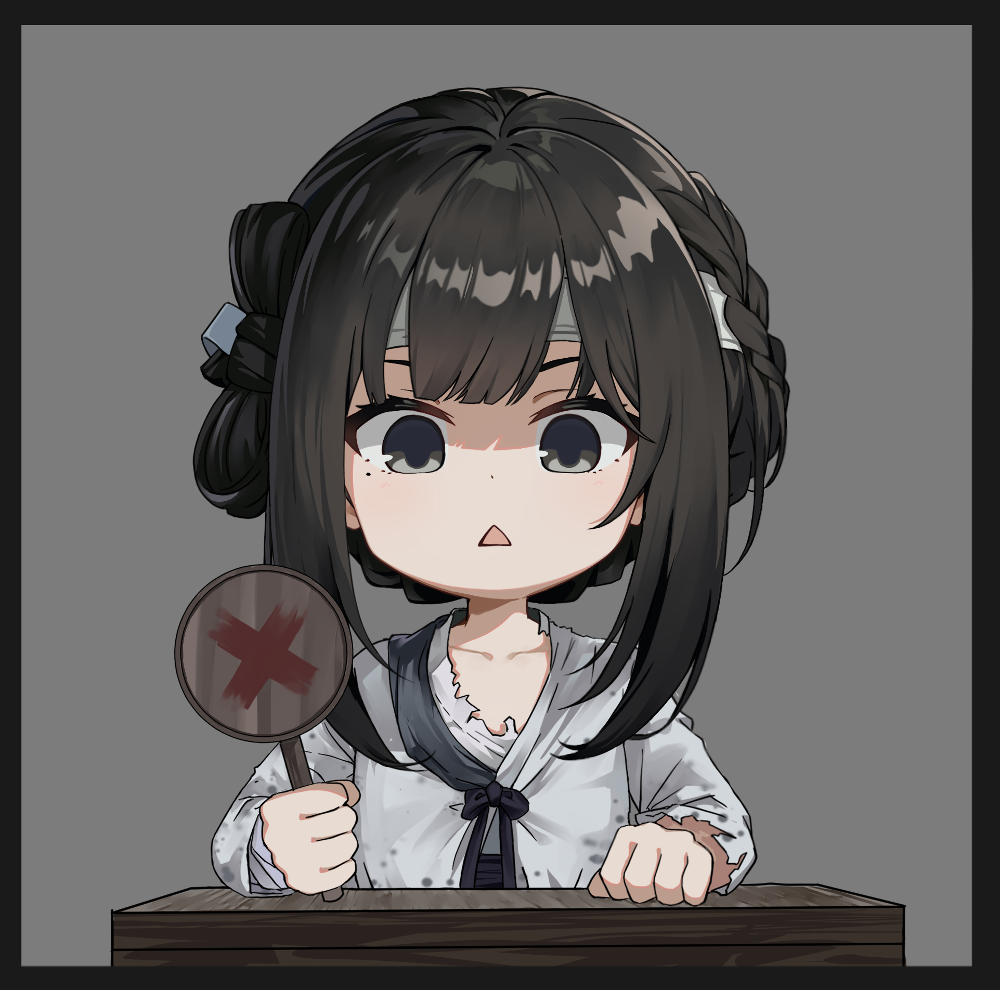

https://www.wikihow.com/Respond-to-What-Are-You-Doing
"zgm" is such a simple question, but it's easy to feel like a deer caught in headlights when it's nekopara70622 who wants to know. Do you respond honestly? Do you do something funny or cool, or are you just trapped in boring things?
